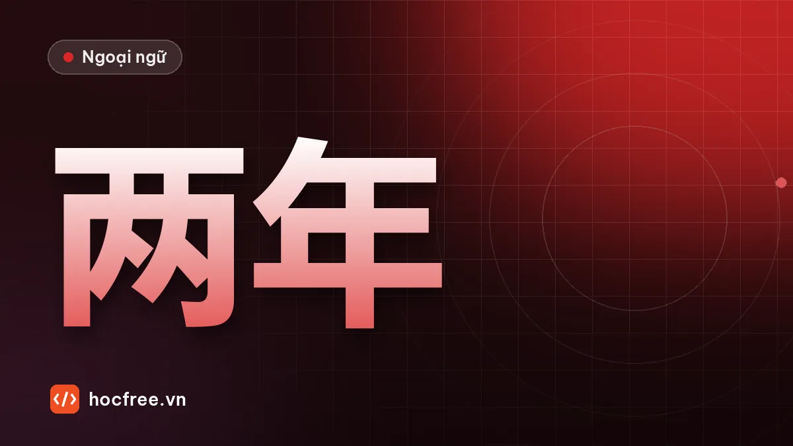

Nói làm gì bao lâu, mấy lần: bổ ngữ thời lượng, 次 và 已经
Bổ ngữ thời lượng (học hai năm, đợi mười phút), vị trí của tân ngữ, số lần với 次, 已经…了 và mẫu câu đã làm việc gì được bao lâu rồi.

Học xong bài này, bạn sẽ
- Nói thời lượng sau động từ
- Nói số lần với 次
- Dùng 已经…了 và câu đã… được bao lâu
Nên học trước: Đi lại: câu liên động, 从…到, 离
Nội dung bài viết
"Tôi học tiếng Trung ba tháng rồi", "Đợi tôi mười phút", "Tôi đã đến đó hai lần". Nói bao lâu và mấy lần là chỗ tiếng Trung khác hẳn thói quen trước đây: thời lượng và số lần đứng sau động từ, không phải trước như thời điểm. Bài này giải thích sự khác nhau đó và vị trí của tân ngữ.
Từ vựng
| Chữ Hán | Pinyin | Nghĩa | Ví dụ |
|---|---|---|---|
| 分钟 | fēnzhōng | phút (thời lượng) | 等十分钟 |
| 小时 | xiǎoshí | tiếng, giờ đồng hồ | 两个小时 |
| 天 | tiān | ngày | 三天 |
| 星期 | xīngqī | tuần | 一个星期 |
| 月 | yuè | tháng | 三个月 |
| 年 | nián | năm | 两年 |
| 多长时间 | duō cháng shíjiān | bao lâu | 你学了多长时间？ |
| 次 | cì | lần | 去过两次 |
| 遍 | biàn | lượt (từ đầu đến cuối) | 再说一遍 |
| 已经 | yǐjīng | đã | 已经三年了 |
| 才 | cái | mới (chỉ có, muộn hơn dự kiến) | 我才学了一个月。 |
| 一会儿 | yíhuìr | một lát | 休息一会儿 |
| 一下 | yíxià | một chút, thử | 等一下 |
| 练习 | liànxí | luyện tập | 每天练习半个小时 |
| 跑步 | pǎobù | chạy bộ | 跑了半个小时步 |
Phát âm
- 一会儿 yíhuìr và 一下 yíxià: 一 trước thanh 4 đọc yí.
- 遍 biàn và 次 cì: hai lượng từ đều nghĩa "lần", phân biệt ở phần ngữ pháp.
Ngữ pháp
1. Thời điểm và thời lượng: hai vị trí khác nhau
| Thời điểm (khi nào) | Thời lượng (bao lâu) | |
|---|---|---|
| Vị trí | Trước động từ | Sau động từ |
| Ví dụ | 我八点上班。 Tôi đi làm lúc 8 giờ. | 我工作八个小时。 Tôi làm việc 8 tiếng. |
Lưu ý: 两点 (2 giờ, thời điểm) khác 两个小时 (2 tiếng, thời lượng). 三月 (tháng 3) khác 三个月 (3 tháng). 星期一 (thứ Hai) khác 一个星期 (một tuần).
2. Động từ + thời lượng
- 请等一下 / 请等十分钟。 Xin đợi một chút / mười phút.
- 我每天睡七个小时。 Mỗi ngày tôi ngủ 7 tiếng.
- 他在中国住了两年。 Anh ấy đã sống ở Trung Quốc hai năm.
3. Có tân ngữ: ba cách
| Cách | Ví dụ |
|---|---|
| Lặp động từ: V + O + V + thời lượng | 我学汉语学了三个月。 |
| V + thời lượng (+的) + O | 我学了三个月(的)汉语。 |
| Tân ngữ là đại từ: V + đại từ + thời lượng | 我等了你半个小时。 |
Động từ ly hợp tách ra: 我跑了半个小时步 hoặc 我跑步跑了半个小时。 睡了八个小时觉。
4. Đã… được bao lâu rồi: hai 了
- 我学了三个月汉语。 Tôi đã học 3 tháng (có thể đã dừng).
- 我学了三个月汉语了。 Tôi học được 3 tháng rồi (vẫn đang học).
- Với 已经 nhấn mạnh: 我已经在这家公司工作五年了。 Tôi đã làm ở công ty này 5 năm rồi.
Ngược lại, 才 nhấn mạnh "mới chỉ": 我才学了一个月。 (Tôi mới học có một tháng.) 才 không đi với 了 cuối câu.
5. Số lần: 次 và 遍
- 次: số lần xảy ra. 我去过北京两次。
- 遍: làm trọn một lượt từ đầu đến cuối (đọc, nghe, nói lại). 请再说一遍。 (Xin nói lại một lần.) 这个电影我看了三遍。
Vị trí giống thời lượng: sau động từ; tân ngữ là đại từ thì đại từ đứng trước: 我见过他一次。
Hội thoại: phỏng vấn ngắn
A: 你在这家公司工作多长时间了？
Nǐ zài zhè jiā gōngsī gōngzuò duō cháng shíjiān le?
Bạn làm ở công ty này bao lâu rồi?
B: 已经三年了。
Yǐjīng sān nián le.
Đã ba năm rồi.
A: 你学汉语学了多长时间了？
Nǐ xué Hànyǔ xué le duō cháng shíjiān le?
Bạn học tiếng Trung bao lâu rồi?
B: 才五个月。我每天练习一个小时。
Cái wǔ gè yuè. Wǒ měitiān liànxí yí gè xiǎoshí.
Mới năm tháng. Mỗi ngày mình luyện một tiếng.
A: 你去过中国几次？
Nǐ qù guo Zhōngguó jǐ cì?
Bạn đi Trung Quốc mấy lần rồi?
B: 对不起，请再说一遍？
Duìbuqǐ, qǐng zài shuō yí biàn?
Xin lỗi, nói lại giúp mình được không?
Luyện tập
Bài 1. Sắp xếp: (1) 等 / 我 / 了 / 半个小时 / 你 (2) 每天 / 他 / 八个小时 / 工作 (3) 学 / 汉语 / 我 / 了 / 学 / 两年 (4) 一遍 / 再 / 请 / 说
Bài 2. Chọn 次 hoặc 遍: (1) 这本书我看了两___。 (2) 我去过上海三___。 (3) 请你再听一___。 (4) 我见过他一___。
Bài 3. Sửa lỗi: (1) 我三个小时学习。 (2) 我等你了半个小时。 (3) 我八个小时睡觉。 (4) 我才学了一个月了。
Xem đáp án
Bài 1. (1) 我等了你半个小时。 (2) 他每天工作八个小时。 (3) 我学汉语学了两年。 (4) 请再说一遍。
Bài 2. (1) 遍 (2) 次 (3) 遍 (4) 次.
Bài 3. (1) 我学习三个小时。 (2) 我等了你半个小时。(了 đứng ngay sau động từ, đại từ trước thời lượng) (3) 我睡八个小时(觉)。/ 我睡了八个小时的觉。 (4) 我才学了一个月。(才 không đi với 了 cuối câu)
Kiểm tra cuối bài
1. Thời điểm và thời lượng đứng ở đâu so với động từ?
2. 三月 và 三个月 khác nhau thế nào?
3. "Tôi làm ở đây được hai năm rồi" nói thế nào?
Xem đáp án
- Thời điểm trước động từ, thời lượng sau động từ.
- 三月: tháng Ba. 三个月: ba tháng.
- 我在这儿工作了两年了。/ 我已经在这儿工作两年了。
Tổng kết và ôn tập
- Thời lượng và số lần đứng sau động từ.
- Có tân ngữ: lặp động từ hoặc V + thời lượng + (的) + O; đại từ đứng trước thời lượng.
- Hai 了 = vẫn đang tiếp tục; 已经 nhấn mạnh lâu, 才 nhấn mạnh ít.
Bài ôn: viết 6 câu về thời gian bạn học, làm việc, sống ở nơi hiện tại. Bài tiếp theo: luyện tập tổng hợp ngữ pháp HSK 2.
Bài tập thực hành
- Viết 6 câu về thời gian bạn học, làm việc, sống ở nơi hiện tại.
- Sắp xếp 8 câu có thời lượng và tân ngữ trong phần luyện tập.
Làm xong bài tập mới chuyển sang bài tiếp theo: đọc to, tự viết chữ Hán và tự chấm đáp án là cách duy nhất để nhớ lâu.